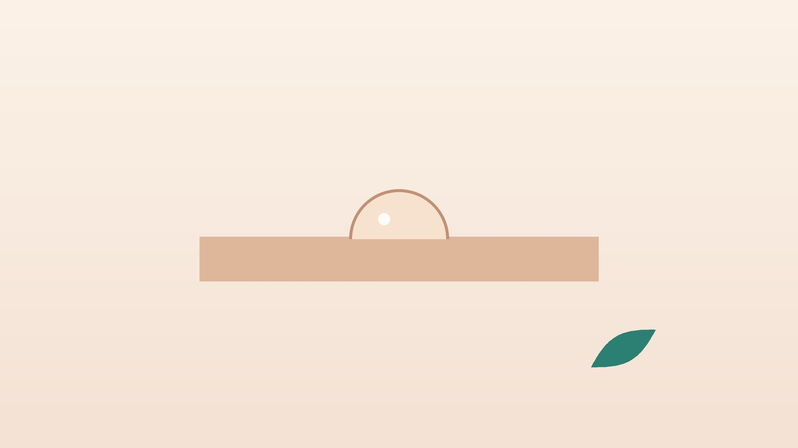

건강 칼럼 · 목·어깨·팔 통증 · 인천 결절종 한의원
손목에 말랑한 혹이 생겼다면, 결절종 확인과 관리

나의 손목 혹, 이런 모습인가요?
- 손등 가운데나 손목 안쪽 엄지 쪽에 동그란 혹이 만져진다
- 눌러 보면 말랑하거나 탱탱하고, 피부 아래에서 조금 움직인다
- 손을 많이 쓴 날은 커졌다가 쉬면 작아지는 듯하다
- 손목을 뒤로 젖히거나 바닥을 짚을 때 혹 주변이 뻐근하다
- 혹은 작은데 손목 깊은 곳이 은근히 아프다
- 휴대폰 불빛을 혹에 대 보면 빛이 은은하게 비친다
이 체크리스트는 진단 도구가 아니라 상담이 필요한지 가늠해 보는 참고용입니다.
결절종은 왜 생기고, 어떻게 확인하나요?
결절종은 관절을 감싼 관절낭이나 힘줄을 둘러싼 힘줄집에서 관절액 성분이 빠져나와 고이면서 생깁니다. 관절과 가는 통로로 이어져 있어 손을 많이 쓰면 커지고 쉬면 줄어드는 듯 보이기도 합니다. 20~40대 여성에게 흔하며, 손등 쪽 손목뼈 사이에 가장 많이 생기고 그다음이 손목 안쪽 엄지 쪽, 손가락 뿌리 순입니다.
미국정형외과학회(AAOS) 환자 안내는 통증이 없는 결절종은 지켜보는 것을 우선 권하며, 진찰과 불빛 비춤으로 시작해 필요하면 초음파나 MRI로 확인한다고 설명합니다. 초음파는 혹 속이 액체인지 단단한 조직인지, 주변 혈관·신경과의 관계는 어떤지를 바로 보여 주어 가장 많이 쓰입니다.
혹이라도 다른 진료가 먼저 필요한 신호
- 혹이 돌처럼 단단하고 눌러도 전혀 움직이지 않는다
- 몇 주 사이에 눈에 띄게 빨리 커진다
- 혹 위 피부가 붉고 뜨겁거나 열이 난다
- 손가락이 저리고 엄지나 새끼손가락 쪽 힘이 빠진다
- 혹이 맥박처럼 뛰는 느낌이 있다 (손목 안쪽 동맥 주변)
- 손가락 끝마디 위에 혹이 생기고 손톱 모양이 변했다
결절종처럼 보여도 지방종, 힘줄의 거대세포종, 드물게 연부조직 종양이나 감염일 수 있습니다. 이런 신호가 있으면 정형외과나 수부외과에서 초음파와 필요한 검사를 먼저 받으세요.
책으로 치거나 바늘로 터뜨려도 되나요?
예전에는 두꺼운 책으로 혹을 세게 내리쳐 터뜨리는 방법이 민간에 알려져 있었지만, 지금은 권하지 않습니다. 잠깐 꺼져도 주머니가 남아 다시 차오르기 쉽고, 내리치는 힘에 손목뼈와 인대가 다칠 수 있습니다.
집에서 바늘이나 핀으로 찌르는 것은 더 위험합니다. 소독되지 않은 바늘이 관절 안으로 세균을 옮기면 관절 감염으로 번질 수 있고, 손목 안쪽 엄지 쪽 혹은 바로 옆에 요골동맥이 지나가 출혈 위험도 있습니다.
한의학은 손목의 혹을 어떻게 보나요?
한의학 고전에는 결절종이라는 이름이 따로 없지만, 힘줄 주변에 몽글하게 뭉친 덩어리를 진액이 제대로 돌지 못해 엉긴 담음(痰飮)이나 힘줄이 맺힌 근결(筋結)의 범주로 해석하기도 합니다. 손을 쉬지 않고 쓰거나 찬 데서 일하면 손목의 기혈 흐름이 더뎌지고, 그 자리에 진액이 머문다고 본 것입니다.
다만 한의 치료의 목표를 혹을 녹이는 데 두지는 않습니다. 결절종이 있는 분이 실제로 불편해하는 것은 손목을 짚거나 젖힐 때의 통증, 혹 주변 힘줄과 아래팔 근육의 뻣뻣함인 경우가 많아, 이 불편을 덜고 손목을 덜 지치게 쓰도록 돕는 데 초점을 둡니다.
나의 손목 불편은 어떤 유형일까?
1. 노손담체(勞損痰滯) 쓰면 커지는 유형
- 이런 분에게 많아요
- 컴퓨터·요리·미용·악기 연주처럼 손목을 계속 쓰는 분
- 나타나는 모습
- 일을 많이 한 날 혹이 탱탱해지고 손등이 뻐근하다
- 함께 오는 몸의 신호
- 아래팔이 쉽게 뭉치고 손이 무겁다
- 진찰에서 보이는 모습
- 혹 주변 압통과 손목을 젖힐 때 통증
- 치료 방향
- 손목 사용량을 조절하며 막힌 흐름을 풀어 주는 방향 (이진탕 가감 계열)
- 오늘부터 해 볼 것
- 손목을 꺾은 채 키보드를 치지 않도록 손목 받침을 쓰세요.
2. 한습응체(寒濕凝滯) 차면 뻣뻣한 유형
- 이런 분에게 많아요
- 찬물에 손을 자주 담그거나 냉방 환경에서 일하는 분
- 나타나는 모습
- 아침이나 추운 날 손목이 굳고 뻐근하다
- 함께 오는 몸의 신호
- 손가락이 차고 붓는 느낌
- 진찰에서 보이는 모습
- 설태가 희고 촉촉함
- 치료 방향
- 찬 습기를 덜고 손목을 따뜻하게 하는 방향 (견비탕 계열)
- 오늘부터 해 볼 것
- 설거지와 청소는 따뜻한 물과 고무장갑으로 하세요.
3. 기혈부족(氣血不足) 쉽게 지치는 유형
- 이런 분에게 많아요
- 출산 뒤나 큰 병 뒤에 손목을 많이 쓰게 된 분
- 나타나는 모습
- 혹은 작아도 손목이 쉽게 시큰하고 힘이 빠진다
- 함께 오는 몸의 신호
- 피로, 어지러움, 손발 저림
- 진찰에서 보이는 모습
- 혀가 옅고 맥이 가늘다
- 치료 방향
- 기혈을 보태 힘줄 회복을 돕는 방향 (팔진탕 계열)
- 오늘부터 해 볼 것
- 아기를 안을 때 손목만 쓰지 말고 팔 전체로 받치세요.
한의원에서는 어떻게 진찰하나요?
- 혹의 성질: 위치와 크기, 단단함, 움직임, 누를 때 통증, 불빛 비춤 반응을 확인합니다.
- 영상 결과: 초음파나 MRI를 찍었다면 결과를 보고, 아직이라면 필요할 때 검사를 먼저 권합니다.
- 손목 기능: 손목을 젖히고 굽히는 범위, 쥐는 힘, 손가락 감각을 살펴 신경 압박 여부를 봅니다.
- 설진·맥진: 손목 불편의 바탕이 뭉침인지, 찬 습인지, 허약인지 판단합니다.
침·약침·한약 치료는 어떻게 하나요?
1. 침 치료
혹 자체를 찌르거나 터뜨리지 않고, 혹을 피해 주변 혈자리와 아래팔의 뭉친 근육을 다룹니다.
- 양지(陽池): 손등 쪽 손목 주름 가운데에서 약간 새끼손가락 쪽, 힘줄 사이 오목한 곳. 손등 손목의 뻐근함에 씁니다.
- 양계(陽谿): 엄지를 위로 젖혔을 때 손목 엄지 쪽에 생기는 두 힘줄 사이 오목한 곳.
- 대릉(大陵): 손바닥 쪽 손목 주름 가운데, 두 힘줄 사이. 손목 안쪽 통증에 씁니다.
- 외관(外關): 손등 쪽 손목 주름에서 팔꿈치 방향으로 손가락 세 마디 위, 두 뼈 사이.
- 수삼리(手三里): 팔꿈치 바깥 주름에서 손목 쪽으로 손가락 세 마디 아래. 아래팔 근육의 긴장을 풉니다.
2. 약침·초음파 가이드 약침과 온열 요법
약침은 일반 약침과 초음파 가이드 약침을 모두 시행하며, 아픈 부위의 깊이와 주변 구조에 따라 진찰 후 골라 씁니다. 초음파 가이드 약침은 초음파 화면으로 바늘 끝을 확인하면서 놓는 방식입니다. 초음파로 혹의 위치와 크기, 주변 혈관을 먼저 확인하고 그 둘레의 뭉친 조직에 약침을 놓습니다. 혹을 피해 손목과 아래팔의 뭉친 부위에 소량의 약침을 놓아 주변 긴장을 덜어 줍니다. 손이 찬 분은 온열 요법을 함께 시행하며, 손목과 팔꿈치 정렬이 함께 어긋난 경우에는 진찰 후 추나 요법을 시행하기도 합니다.
3. 한약
유형에 맞춘 탕약으로 손목이 쉽게 지치고 뻣뻣한 바탕을 다룹니다. 임신 중이거나 드시는 약이 있다면 진료 때 꼭 알려 주세요. 확인 후 안전한 약재로 처방합니다. 한약은 원장이 원내 탕전실에서 약재 선별부터 달이는 과정까지 직접 관리하며, 10일분씩 처방해 복용 경과를 보고 약재 구성과 양을 조절합니다. 아픈 자리는 초음파 가이드 약침과 추나로 다스리고, 통증이 오래가게 만드는 몸속의 기혈 순환과 장부 기능은 체질에 맞춘 한약으로 함께 살피면 통증 완화와 재발 관리를 함께 도모할 수 있습니다.
원장님이 네이버 블로그에 진료 이야기와 건강 정보를 꾸준히 올리고 있습니다. 더 많은 이야기는 블로그에서 확인해 보세요.
블로그 보기관리는 어떤 순서로 진행되나요?
- 혹 확인 진찰과 초음파로 결절종인지, 다른 혹은 아닌지 먼저 확인합니다.
- 1~3주 주 2회 안팎의 침 치료와 약침, 온열 요법으로 손목 통증과 아래팔 긴장을 줄입니다.
- 4~6주 손목 사용 습관을 점검하고 통증 변화에 따라 치료 간격을 늘립니다.
- 경과 관찰 혹의 크기는 몇 달 단위로 지켜보고, 통증이 크거나 계속 커지면 흡인·수술 상담을 연계합니다.
결절종은 저절로 줄기도 하고 다시 생기기도 해, 크기보다 손목을 불편 없이 쓰는지를 기준으로 경과를 봅니다.
흡인이나 수술은 언제 고려하나요?
- 흡인: 주사기로 젤리 같은 내용물을 빼내는 방법으로 간단하지만, 주머니가 남아 다시 생기는 경우가 적지 않습니다.
- 수술: 혹과 함께 관절로 이어진 줄기 부분까지 떼어 내는 방법으로 재발이 상대적으로 적지만, 흉터와 회복 기간이 따르고 재발이 아예 없지는 않습니다.
- 선택 기준: 통증이 일상을 방해하거나 저림이 생기면 정형외과와 상의합니다.
손목을 덜 지치게 하는 생활 관리
- 손목 각도: 키보드와 마우스를 쓸 때 손목이 꺾이지 않도록 높이를 맞추고 받침을 씁니다.
- 짚는 동작: 바닥을 짚고 일어나거나 팔굽혀펴기를 할 때 손목이 아프면 주먹을 쥐고 짚거나 잠시 쉽니다.
- 쉬는 시간: 한 시간에 한 번은 손을 털고 아래팔을 늘입니다.
- 따뜻하게: 찬물 작업은 줄이고, 뻐근한 날은 미지근한 물에 손목을 담가 데웁니다.
- 만지지 않기: 혹이 궁금해 자꾸 누르거나 문지르면 주변이 더 예민해질 수 있습니다.
다른 진료가 함께 필요한 경우
- 혹이 단단하거나 빨리 커지면 정형외과에서 초음파와 정밀 검사를 받으세요.
- 손가락 저림이나 힘 빠짐이 있으면 신경 압박 여부를 확인하세요.
- 혹 주변이 붉고 뜨거우며 열이 나면 감염을 의심해 바로 진료를 받으세요.
- 손가락 끝마디의 혹은 관절염 평가가 함께 필요합니다.
자주 묻는 질문 Q&A
- Q1. 결절종이 암이 될 수 있나요?
- 결절종은 양성 물혹으로 암으로 바뀌지 않습니다. 다만 결절종처럼 보이는 다른 혹이 있어 초음파로 확인하는 것이 좋습니다.
- Q2. 아프지 않으면 그냥 둬도 되나요?
- 통증이 없고 일상에 지장이 없다면 지켜보는 것도 좋은 선택입니다. 상당수가 저절로 작아지거나 사라집니다.
- Q3. 주사기로 빼면 끝인가요?
- 간단하게 줄일 수 있지만 주머니가 남아 다시 차오르는 경우가 적지 않습니다.
- Q4. 한약이나 침으로 혹이 없어지나요?
- 혹을 없앤다고 말씀드리지는 않습니다. 손목 통증과 주변 긴장을 줄이는 것이 한방 관리의 목표입니다.
- Q5. 보호대를 차면 도움이 되나요?
- 아픈 시기에 잠깐은 도움이 되지만, 오래 차면 손목이 굳을 수 있습니다.
- Q6. 운동을 해도 되나요?
- 손목을 크게 젖히는 동작이 아프면 피하고, 통증이 없는 범위에서 가볍게 움직이세요.
- Q7. 아이에게도 생기나요?
- 어린이에게도 생길 수 있으며 저절로 사라지는 경우가 많습니다. 아이에게는 약침을 쓰지 않고 피부에 붙이는 소아 스티커침과 생활 관리로 돕습니다.
- Q8. 자동차 사고 뒤 손목이 아파요. 보험 진료가 되나요?
- 자동차보험으로 진료받으실 수 있습니다. 넘어지거나 부딪힌 뒤라면 골절 여부를 먼저 확인합니다.
문원열 대표원장한의사 · 365스마일한의원
임상 경력 15년, 인천 서구 가정동에서 개원 후 10년째 진료하고 있으며, FCST 턱관절학회·연부조직학회·침도학회 등에서 활동합니다. 아픈 곳만이 아니라 증상의 원인을 찾아 진료합니다.
진료 안내
- 진료시간
- 평일 09:00~20:00 (점심시간 13:00~14:00, 접수 마감 19:30)
토·일·공휴일 09:00~15:00 (접수 마감 14:30) - 주소
- 인천광역시 서구 가경주로 46, 2층 (가정동)
인천2호선 가정중앙시장역 인근
영상으로 길 안내 보기 → - 주차
- 한의원 건물 바로 앞 1층 도원주차장
- 예약
- 예약 바로가기 또는 전화 예약
진료시간은 사정에 따라 바뀔 수 있으니 방문 전 전화로 확인해 주세요.
함께 읽으면 좋은 칼럼
건강 칼럼 전체 보기 →
참고 자료
- American Academy of Orthopaedic Surgeons (AAOS) OrthoInfo. Ganglion Cyst of the Wrist and Hand
- 질병관리청 국가건강정보포털 — 원문
※ 이 글은 일반적인 건강 정보이며, 개인의 상태에 따라 치료 방법과 결과는 다를 수 있습니다. 정확한 진단과 치료는 진료를 통해 결정됩니다. 침·약침 시술 후 드물게 멍, 통증 등이 생길 수 있습니다.